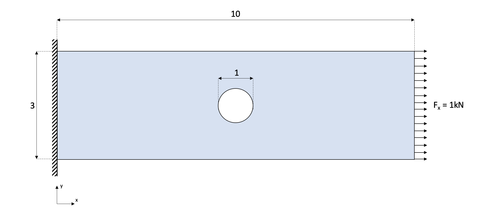
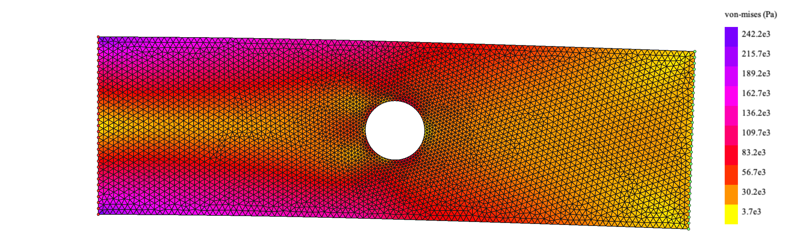

import numpy as np
from math import *
import drawMesh
import pygmsh
import gmshThe finite element method is a numerical technique used to solve complex engineering and physical problems. It is a powerful tool that allows for the accurate prediction of the behavior of a system under a wide range of conditions, making it an essential tool for engineers and scientists working in fields such as structural analysis, fluid dynamics, and electromagnetics. In this blog post, we will explore the basics of the finite element method and how it is used to solve real-world problems using Python. Whether you are an experienced engineer or a curious learner, I hope that this post will provide you with a better understanding of this important and versatile method.
By the end of this tutorial, you will be able to use Python to implement the finite element method and apply it to solve simple problems.
All the code can be find here.
Introduction
The Finite Element Method works by divinding a physical space into diferent elements and the governing equations are applied for each element. This is very useful for complex geometries or boundary conditions were obtaining an analytical expression is not feassible.
Altough FEM can be applied for many different phypical problems, it is more comonly used in structural analysis. Therefore will be developing the FEM for structural analysis in 2D. In this example the structural case will be a 2D rectangular plate (5mx10m) with an hole (1m), fixed on one side and subjected to a constant tension force of 1 kN on the opposite side:

To simplify the problem 3-node triangular elements will be used.
The main equation in the FEM for structural analysis is the following: \[\textbf{K} \textbf{d} = \textbf{F}\] Where \(\textbf{d}\) is the displacement vector, \(\textbf{F}\) is the force vector and \(\textbf{K}\) is the stiffness matrix. The displacemnet vector contains the displacements of the nodes, the force vector is composed by the external forces and the rection forces of the nodes. For the rest of this example the force vector will be expressed as the sum of the external forces (\(\textbf{f}\)) and the rection forces (\(\textbf{r}\)): \[\textbf{K} \textbf{d} = \textbf{f} + \textbf{r}\]
While the displacemts and forces seem quite intuitive to understand, the stiffnes matrix is a bit more abstract. It represents the resistance to deformation. It is analogus to the spring constant (\(k\)) in Hooke’s law: \[ F = kx \]
Requirements
To run this code some libraries are required:
Terminal
pip install numpyTerminal
pip install pygmshTerminal
pip install gmshTerminal
pip install pytgletTo start we must import some libraries, including numpy, pygmsh, and gmsh. NumPy is a library for scientific computing in Python, and is often used for numerical calculations and data manipulation. The math library provides mathematical functions. The library drawMesh is a simple mesh visualization library based on pyglet developed for this project, it can be found in the GitHub repository. Finally, gmsh is a powerful mesh generation software that can be used in conjunction with pygmsh. Together, these libraries provide the tools necessary to implement the finite element method in Python.
Mesh
The separation of the geometry into elements and nodes can be done manually but it becomes exponetially difficult for complex geometries and finer mesh resolutions. Therefore we make use of gmsh, a powerful meshing tool.
We create the mesh using pygmsh. The mesh resolution is defined in the variable resolution. The lower the value of resolution, the more the mesh will be divided into elements. This will lead to better results but higher computational cost. On of the key aspects of FEM is to balance between mesh resolution and computing power.
gmsh.initialize()
rect_width, rect_length = 3.0, 10.0
resolution = 0.1
geom = pygmsh.geo.Geometry()
circle = geom.add_circle(
[5,1.5,0],
radius=0.5,
mesh_size=resolution*0.5,
make_surface=False
)
rect = geom.add_polygon(
[
[0.0, 0.0 ,0],
[0.0, rect_width ,0],
[rect_length, rect_width ,0],
[rect_length, 0.0 ,0],
],
mesh_size=resolution , holes = [circle]
)
mesh = geom.generate_mesh(dim=2)
geom.__exit__()The resultant mesh looks like this:

This mesh is composed of many nodes, that form triangular elements. Many nodes are shared by different by multiple elements.
Node
The following code defines the Node class, which represents a node in a mesh. The class has several attributes and methods that are used to store and manipulate information about the node, such as its coordinates, forces, and displacements.

The init method is used to initialize a new Node object, and accepts the node’s id, x and y coordinates as arguments. The fx and fy attributes are used to store the external forces applied to the node, and the rx and ry attributes are used to store the reaction forces at the node. The dx and dy attributes are used to store the displacements of the node.
The dfix property returns a Boolean value indicating whether the node is fixed in both x and y directions. The externalForce property returns a Boolean value indicating whether the node has any external forces applied to it. The eq method is used to compare two Node objects and returns a Boolean value indicating whether they are at the same location. This class can be used to represent nodes in a mesh and perform operations on them.
class Node:
def __init__(self, id, x, y):
self.id = id
self.x, self.y = x, y
self.fx, self.fy = 0.0, 0.0
self.rx, self.ry = 0.0 ,0.0
self.dx, self.dy = None, None
@property
def dfix(self):
if self.dx == 0.0 and self.dy == 0.0:
return True
else:
return False
@property
def externalForce(self):
if self.fx != 0.0 or self.fy != 0.0:
return True
else:
return False
def __eq__(self, obj):
if (self.x == obj.x) and (self.y == obj.y):
return True
else:
return False Element
Each element contains a series of nodes. In this case, we are using triangular nodes therefore each element has three nodes. It is important for the calculations that the nodes in each element are ordered counter-clockwise, therefore the passed nodes in the initialization are ordered with the orderCounterClock() method. Each element contains a stress (\(\vec{\sigma}\)) and a strain (\(\vec{\varepsilon}\)) attributes:
\[\begin{equation} \vec{\sigma} = \begin{bmatrix} \sigma_{xx}\\ \sigma_{yy}\\ \sigma_{xy}\\ \end{bmatrix} \hspace{10mm} \vec{\varepsilon} = \begin{bmatrix} \varepsilon_{xx}\\ \varepsilon_{yy}\\ \gamma_{xy}\\ \end{bmatrix} \end{equation}\]
\[\begin{equation} \mathbf{d^e} = \begin{bmatrix} d_{0,x}^e\\ d_{0,y}^e\\ d_{1,x}^e\\ d_{1,y}^e\\ d_{2,x}^e\\ d_{2,y}^e\\ \end{bmatrix} \hspace{5mm} \mathbf{K^e} = \begin{bmatrix} k_{00} & k_{01} & k_{02} & k_{03} & k_{04} & k_{05} & \\ k_{10} & k_{11} & k_{12} & k_{13} & k_{14} & k_{15} & \\ k_{20} & k_{21} & k_{22} & k_{23} & k_{24} & k_{25} & \\ k_{30} & k_{31} & k_{32} & k_{33} & k_{34} & k_{35} & \\ k_{40} & k_{41} & k_{42} & k_{43} & k_{44} & k_{45} & \\ k_{50} & k_{51} & k_{52} & k_{53} & k_{54} & k_{55} & \\ \end{bmatrix} \end{equation}\]
\[\begin{equation} \mathbf{K^e} = \int_{\Omega}(\mathbf{B^e})^T \mathbf{D} \hspace{1mm} \mathbf{B^e} d \Omega = (\mathbf{B^e})^T \mathbf{D} \hspace{1mm} \mathbf{B^e} \end{equation}\]
\[\begin{equation} \mathbf{B^e} = \frac{1}{2 A^e} \begin{bmatrix} (y_1^e - y_2^e) & 0 & (y_2^e - y_0^e) & 0 & (y_0^e - y_1^e) & 0 & \\ 0 & (x_2^e - x_1^e) & 0 & (x_0^e - x_2^e) & 0 & (x_1^e - x_0^e) & \\ (x_2^e - x_1^e) & (y_1^e - y_2^e) & (x_0^e - x_2^e) & (y_2^e - y_0^e) & (x_1^e - x_0^e) & (y_0^e - y_1^e) & \\ \end{bmatrix} \end{equation}\]
class Element:
maxColorVal = -9.9e19
minColorVal = 9.9e19
colorFunc = lambda x: x
def __init__(self, id, nodes):
self.id = id
self.nodes = self.orderCounterClock(nodes)
self.stress = None
self.strain = None
self.colorVal = 0
self.getArea()
@property
def getmaxColorVal(self):
return Element.maxColorVal
@property
def getminColorVal(self):
return Element.minColorVal
@property
def getcolorFunc(self):
return Element.colorFunc
def getde(self):
de_ = []
for n in self.nodes:
de_.append(n.dx)
de_.append(n.dy)
self.de = np.array(de_)
return self.de
def getColor(self):
try: x_ = float(self.colorVal - Element.minColorVal)/(Element.maxColorVal - Element.minColorVal)
except ZeroDivisionError: x_ = 0.5 # cmax == cmin
x = Element.colorFunc(x_)
blue = int(255* min((max((4*(0.75-x), 0.)), 1.)))
red = int(255* min((max((4*(x-0.25), 0.)), 1.)))
green = int(255* min((max((4*fabs(x-0.5)-1., 0.)), 1.)))
return (red, green, blue)
def getArea(self):
x1,y1 = self.nodes[0].x, self.nodes[0].y
x2,y2 = self.nodes[1].x, self.nodes[1].y
x3,y3 = self.nodes[2].x, self.nodes[2].y
result = 0.5*((x2*y3 - x3*y2)-(x1*y3- x3*y1)+(x1*y2-x2*y1))
if result == 0:
result = 1e-20
self.area = result
return result
def getBe(self):
x1,y1 = self.nodes[0].x, self.nodes[0].y
x2,y2 = self.nodes[1].x, self.nodes[1].y
x3,y3 = self.nodes[2].x, self.nodes[2].y
B = (0.5/self.area) * np.array([
[(y2-y3) , 0 , (y3-y1), 0 , (y1-y2), 0 ],
[ 0 , (x3-x2), 0 , (x1-x3), 0 ,(x2-x1)],
[(x3-x2) , (y2-y3), (x1-x3), (y3-y1), (x2-x1) ,(y1-y2)],
], dtype=np.float64)
self.Be = B
return B
def getKe(self, D):
Bie = self.getBe()
Ke = self.area* np.matmul(Bie.T, np.matmul(D, Bie))
self.Ke = Ke
return Ke
def orderCounterClock(self, nodes):
p1,p2,p3 = nodes[0], nodes[1], nodes[2]
val = (p2.y - p1.y) * (p3.x - p2.x) - (p2.x - p1.x) * (p3.y - p2.y)
nodes_ = nodes.copy()
if val > 0:
nodes[1] = nodes_[0]
nodes[0] = nodes_[1]
assembly = []
for n in nodes:
assembly.append(int(n.id*2))
assembly.append(int(n.id*2) +1)
self.assembly = assembly
return nodes Preprocessing
Extract mesh data
maxNode = 0
for cell in mesh.cells[1].data:
for node in cell:
if node > maxNode:
maxNode = node
meshCells = mesh.cells[1].data - np.full(np.shape(mesh.cells[1].data), 1, dtype=np.uint64)
meshPoints = mesh.points[1:]nodes = [Node(i, point[0], point[1]) for i, point in enumerate(meshPoints)]
elements = []
for i,cell in enumerate(meshCells):
elements.append(
Element(id=i, nodes=[nodes[i] for i in cell])
)Material properties
v = 0.28
E = 200.0e9
D = (E/(1-v**2)) * np.array([
[1, v, 0],
[v, 1, 0],
[0, 0, (1-v)/2],
])Boundary conditions and forces
for i, node in enumerate(nodes):
if node.x == rect_length: # At right side of the rectangle (x=10)
node.fx = 1.0e3 # Apply a downwards force of 1kN
elif node.x == 0.0: # At left side of the rectangle (x=0)
node.dx, node.dy = 0.0, 0.0 # Fix the displacement in x and y
node.rx, node.ry = None, None # Set the reaction forces as unknownsStiffness matrix assembly

def assemblyK(K, Ke, nodeAssembly):
for i,t in enumerate(nodeAssembly):
for j,s in enumerate(nodeAssembly):
K[t][s] += Ke[i][j]\[ \mathbf{K} = \sum_{i = 0}^{N_{el}} \mathbf{\hat{K}^e} \]
Nnodes = len(nodes)
K = np.zeros((Nnodes*2,Nnodes*2))
B_list = []
for e in elements:
Ke = e.getKe(D)
nodeAssembly = e.assembly
assemblyK(K, Ke, nodeAssembly)\[Kd = f + r\]
f = np.zeros((int(2*Nnodes), 1))
d = np.full((int(2*Nnodes), 1), None)
r = np.full((int(2*Nnodes), 1), None)
rowsrk, rowsdk = [], []
for i,node in enumerate(nodes):
ix,iy = int(i*2), int(i*2)+1
f[ix], f[iy] = node.fx, node.fy
d[ix], d[iy] = node.dx, node.dy
r[ix], r[iy] = node.rx, node.ry
if node.dx == None:
rowsrk.append(ix)
else:
rowsdk.append(ix)
if node.dy == None:
rowsrk.append(iy)
else:
rowsdk.append(iy)Solver
KB = np.zeros((len(rowsrk),len(rowsrk)))
KA = np.zeros((len(rowsdk),len(rowsrk)))
fk = np.array([r[i] for i in rowsrk]) + np.array([f[i] for i in rowsrk])
dk = np.array([d[i] for i in rowsdk])
for i in range(np.shape(KB)[0]):
for j in range(np.shape(KB)[1]):
KB[i][j] = K [rowsrk[i]][rowsrk[j]]
for i in range(np.shape(KA)[0]):
for j in range(np.shape(KA)[1]):
KA[i][j] = K [rowsdk[i]][rowsrk[j]]\[ \mathbf{d_U} = \mathbf{K_B}^{-1} \mathbf{f_K} \hspace{10mm} \mathbf{f_U} = \mathbf{K_A} \mathbf{d_U} \]
du = np.matmul(np.linalg.inv(KB), fk)
fu = np.matmul(KA,du)Postprocessing
d_total = d.copy()
for i, d_solve in zip(rowsrk, du):
d_total[i] = d_solvefor i,n in enumerate(nodes):
ix,iy = int(i*2), int(i*2)+1
n.dx = d_total[ix][0]
n.dy = d_total[iy][0]Von-Mises Stress
\[ \sigma_v = \sqrt{\sigma_{xx} + \sigma_{yy} + 3\sigma_{xy}^2 - \sigma_{xx}\sigma_{yy} } \]
def calculateVonMises(sx, sy, sxy):
return sqrt(sx**2 + sy**2 + 3*(sxy**2) - sx*sy)Mesh deformation and Coloring
def rgb(mag, cmin, cmax):
try: x = float(mag-cmin)/(cmax-cmin)
except ZeroDivisionError: x = 0.5
blue = int(255* min((max((4*(0.75-x), 0.)), 1.)))
red = int(255* min((max((4*(x-0.25), 0.)), 1.)))
green = int(255* min((max((4*fabs(x-0.5)-1., 0.)), 1.)))
return (red, green, blue)
average = lambda x: (sum(x)/len(x))maxd, mind = max(d_total)[0], min(d_total)[0]
Element.colorFunc = lambda x: x #exp(-x)\[ \varepsilon^e = \mathbf{B}^e \mathbf{d}^e \hspace{20mm} \sigma^e = \mathbf{D} \varepsilon^e \]
for i,element in enumerate(elements):
de = element.getde()
strain_e = np.matmul(element.Be,de)
stress_e = np.matmul(D, strain_e)
dx_avg = average([de[0], de[2], de[4]])
dy_avg = average([de[1], de[3], de[5]])
element.strain = strain_e
element.stress = stress_e
element.colorVal = calculateVonMises(element.stress[0], element.stress[1], element.stress[2])
if element.colorVal > Element.maxColorVal:
Element.maxColorVal = element.colorVal
if element.colorVal < Element.minColorVal:
Element.minColorVal = element.colorValrender = drawMesh.MeshRender()
render.legend = True
render.autoScale = True
render.deform_scale = 1.0e5
render.legendDiscretize = 10
render.legendTitle = 'von-mises (Pa)'
render.drawElements(elements)
If we rerun the code changing the force direction downwards we get the following result:
